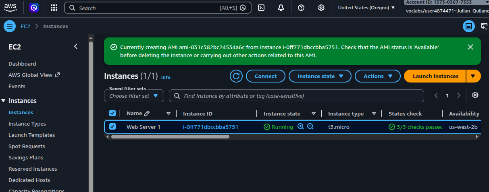
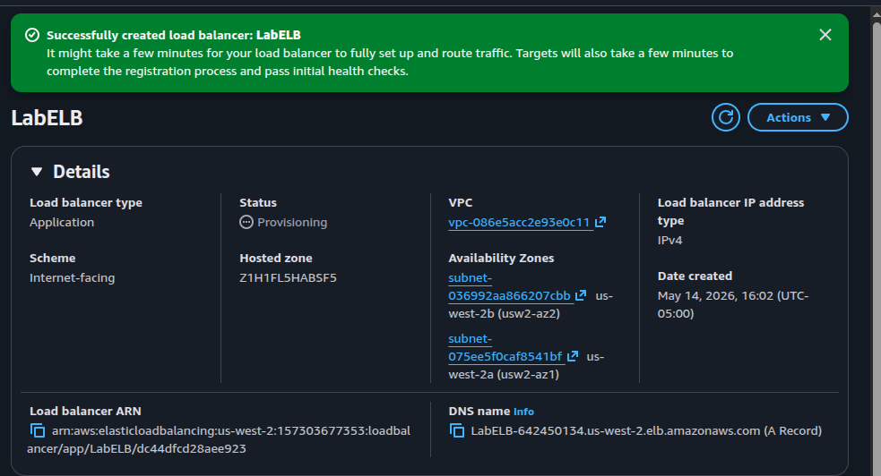
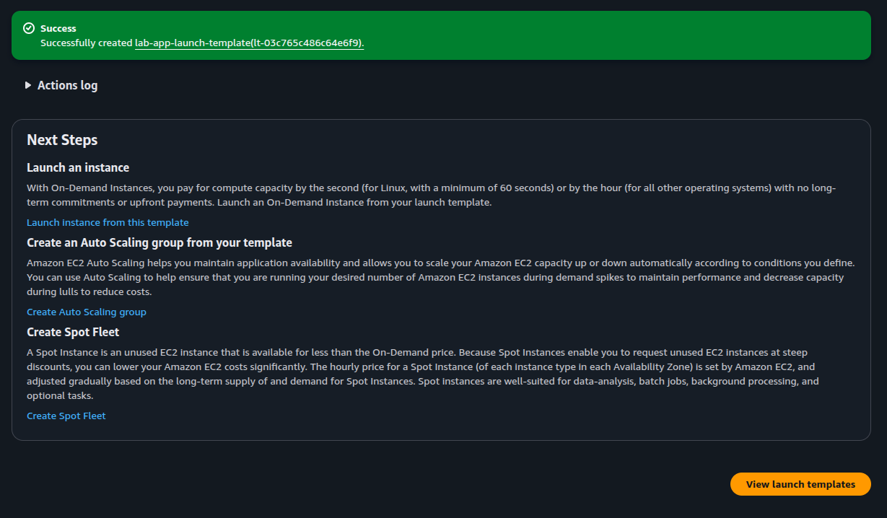
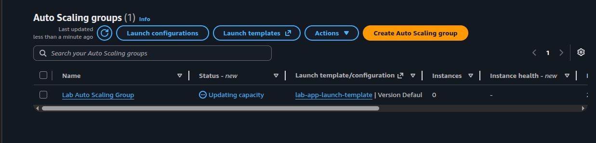
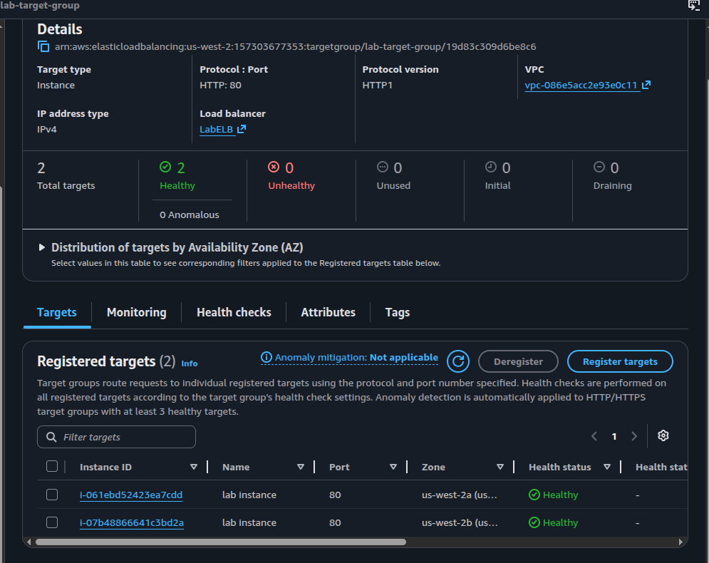
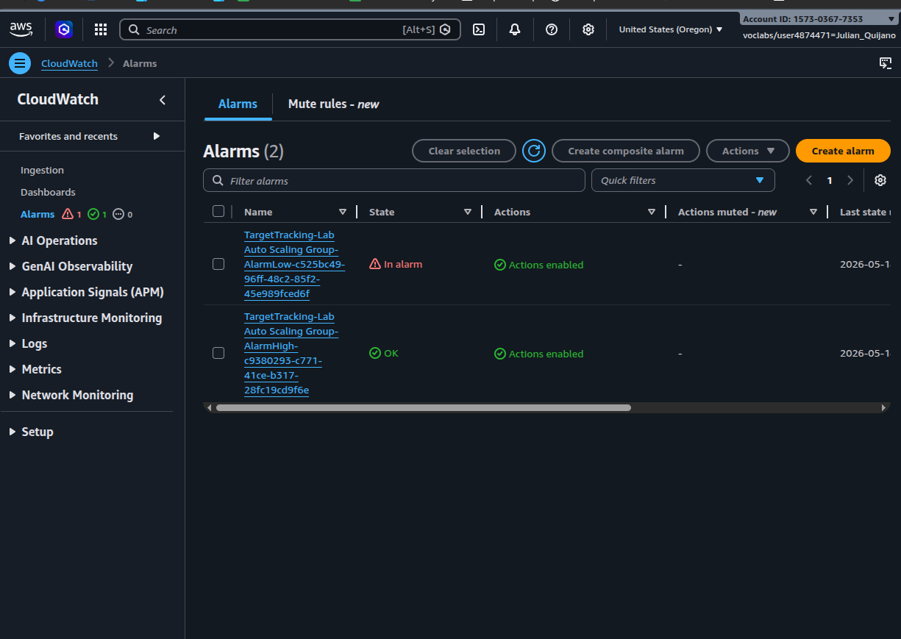

Fault Tolerance
ALB spreads traffic across two AZs (us-west-2a, us-west-2b).
The ASG keeps a minimum of two instances and the ELB health check replaces any instance
that stops responding on HTTP/80.
Built a fault-tolerant, horizontally scalable web tier on AWS by combining a custom AMI, an Application Load Balancer in public subnets across two AZs, and an Auto Scaling Group in private subnets driven by a CloudWatch target-tracking policy on CPU utilization.
Captured a snapshot of Web Server 1 as a custom AMI, fronted the
application with an internet-facing ALB spanning two public subnets,
and replaced the single server with an Auto Scaling group of
t3.micro instances running in private subnets. A
target tracking policy at 50% average CPU drives
scaling decisions, with health checks delegated to the ELB.
ALB spreads traffic across two AZs (us-west-2a, us-west-2b).
The ASG keeps a minimum of two instances and the ELB health check replaces any instance
that stops responding on HTTP/80.
Min=2, Desired=2, Max=4. When average CPU crosses the 50% target, CloudWatch's
auto-generated AlarmHigh fires and the ASG launches additional instances
from the launch template until load drops.
Defense in depth: the only public-facing surface is the load balancer. Application instances live in private subnets and only accept traffic from the ALB's security group.
Public Subnet 1 + Public Subnet 2 · Web Security Group (HTTP 80)
lab-target-group · type Instance · HTTP:80 · health checks per
target on the application port
t3.micro instances from
Web Server AMI into Private Subnet 1 +
Private Subnet 2 · health-check type ELB
50% average CPU ·
auto-creates AlarmHigh (scale out) and AlarmLow (scale in)
All work was done from the AWS Management Console. The lab provided the VPC, subnets,
security groups, and a pre-running Web Server 1 instance.
The AMI freezes the boot disk of the running web server so the Auto Scaling group
can launch identical replicas later. From EC2 > Instances,
selected Web Server 1 and chose
Actions > Image and templates > Create image, naming it
Web Server AMI. AWS started the snapshot process and returned the new
AMI ID.

ami-031c382bc24534a6c is being created from Web Server 1 (i-0ff771dbccbba5751, us-west-2b).
From EC2 > Load Balancers, created LabELB with the
following configuration:
| Setting | Value |
|---|---|
| Type | Application Load Balancer (HTTP / Layer 7) |
| Scheme | Internet-facing |
| IP type | IPv4 |
| VPC | vpc-086e5acc2e93e0c11 (Lab VPC) |
| Availability Zones | Public Subnet 1 (us-west-2a) + Public Subnet 2 (us-west-2b) |
| Security group | Web Security Group (HTTP 80 from 0.0.0.0/0) |
| Listener | HTTP:80 → target group lab-target-group |
The target group lab-target-group was created in the same flow with
target type Instance, protocol HTTP:80, and the
lab's default health-check settings. The ALB's public DNS name became the entry
point for the application:
LabELB-642450134.us-west-2.elb.amazonaws.com

LabELB created · status Provisioning · mapped to us-west-2a and us-west-2b · DNS name visible at the bottom.
The launch template tells the Auto Scaling group how to launch each
instance. Created lab-app-launch-template with the following:
| Setting | Value |
|---|---|
| AMI | Web Server AMI (the one from Task 1) |
| Instance type | t3.micro |
| Key pair | None (no SSH access from outside) |
| Security group | Web Security Group |
| Guidance | Provide guidance for EC2 Auto Scaling enabled |

lab-app-launch-template (lt-03c765c486c64e6f9) created. The Next Steps panel offers direct access to Create Auto Scaling group.The core of the lab. Used the Create Auto Scaling group link from the launch template's Next Steps panel and applied this configuration:
| Setting | Value |
|---|---|
| Name | Lab Auto Scaling Group |
| Launch template | lab-app-launch-template · Version Default |
| VPC | Lab VPC |
| Subnets | Private Subnet 1 (10.0.1.0/24) + Private Subnet 2 (10.0.3.0/24) |
| Load balancing | Attach to existing target group lab-target-group | HTTP |
| Health check type | ELB (not EC2) |
| Group size | Min = 2 · Desired = 2 · Max = 4 |
| Scaling policy | Target tracking · Average CPU utilization · target = 50% |
| Tag | Name = Lab Instance |
Once submitted, the ASG entered Updating capacity and started launching the first two instances into the private subnets.

Lab Auto Scaling Group created · status Updating capacity · capacity still 0 because the first instances were still booting.
After the ASG finished launching the first batch, both new instances registered
with lab-target-group and passed their HTTP health checks. At that
point Web Server 1 (the source of the AMI) was deleted — the ASG had
replaced its role with two identical instances across both AZs.

lab-target-group · 2 Healthy / 0 Unhealthy · one instance in us-west-2a, one in us-west-2b, both registered as lab instance.The ALB DNS name from Task 2 served the lab's Load Test application across both instances. Traffic was distributed by the ALB on each request.
The Load Test page inside the application drives CPU upward on whichever instance serves the request. The target-tracking policy from Task 4 created two CloudWatch alarms automatically:
TargetTracking-Lab Auto Scaling Group-AlarmHigh-... — fires when
average CPU stays above the 50% target, signaling scale out.TargetTracking-Lab Auto Scaling Group-AlarmLow-... — fires when
average CPU drops well below the target, signaling scale in.
On a freshly created cluster with idle instances, AlarmLow is the one
In alarm and AlarmHigh is OK — which is the state the
screenshot below captures, before the Load Test pushed CPU up.

AlarmLow In alarm (idle cluster, no load) · AlarmHigh OK. Both alarms have Actions enabled, so they're connected to the ASG's scaling policies.alarmahigh.png, but it actually shows the
baseline state: AlarmLow is the one in alarm and
AlarmHigh is OK. The file has been renamed to
06-cloudwatch-alarms-baseline.png in this report.
Expected transition during the Load Test (not captured as a screenshot):
after a few minutes of sustained CPU above the 50% target,
AlarmHigh moves to In alarm and the ASG launches additional
instances up to the configured maximum of 4. Once the load stops, CPU
drops back, AlarmLow returns to In alarm, and the ASG
gradually terminates instances down to the minimum of 2.
AlarmHigh / AlarmLow pair
automatically.The combined pattern — AMI + ALB + ASG + target tracking — is the canonical AWS shape for a stateless web tier. The launch template separates what an instance looks like from when to create one; the ASG owns lifecycle and replacement; the ALB owns ingress and traffic distribution; CloudWatch owns the feedback loop.
The most subtle choice is the ELB health-check type: it shifts the definition of "healthy" from the hypervisor up to the application layer, which is what fault tolerance actually needs in practice. The optional CLI challenge from the lab guide was not executed in this run — the console flow was enough to verify the architecture end to end.